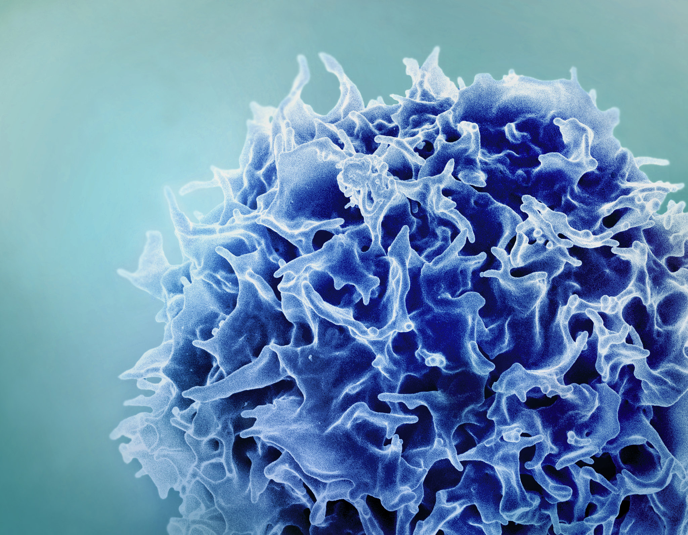
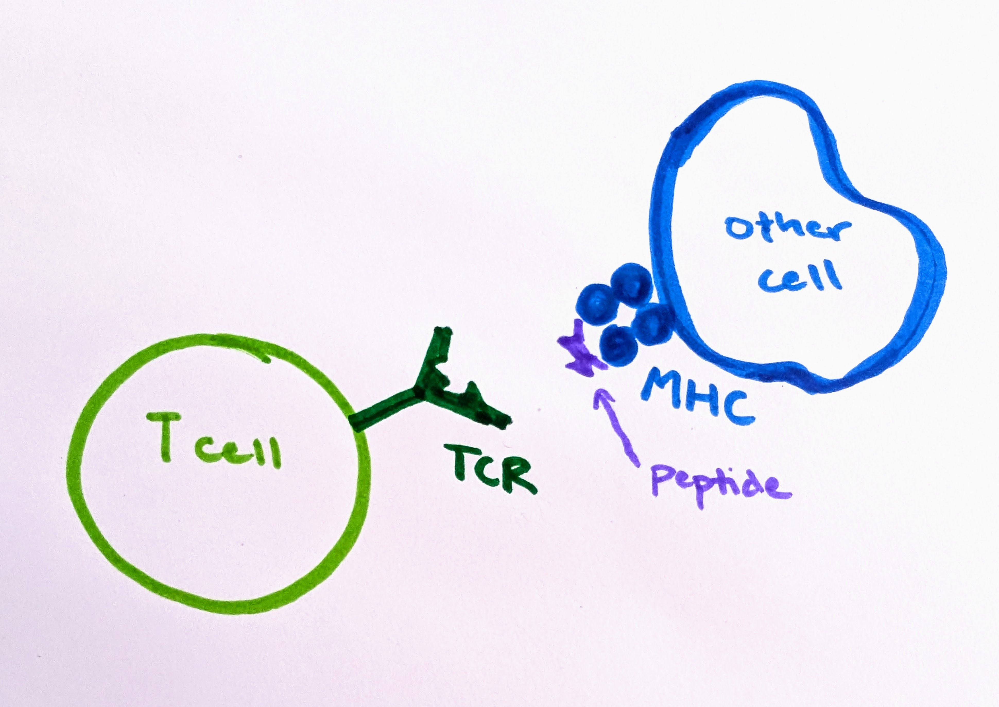
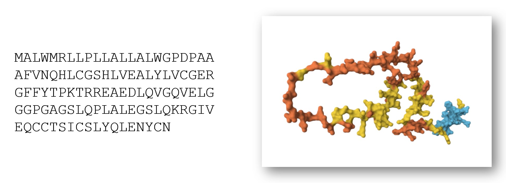
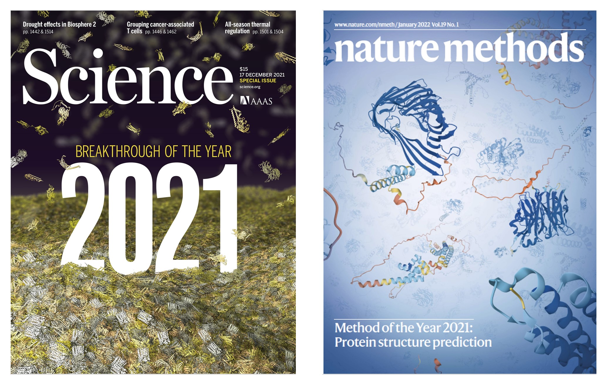
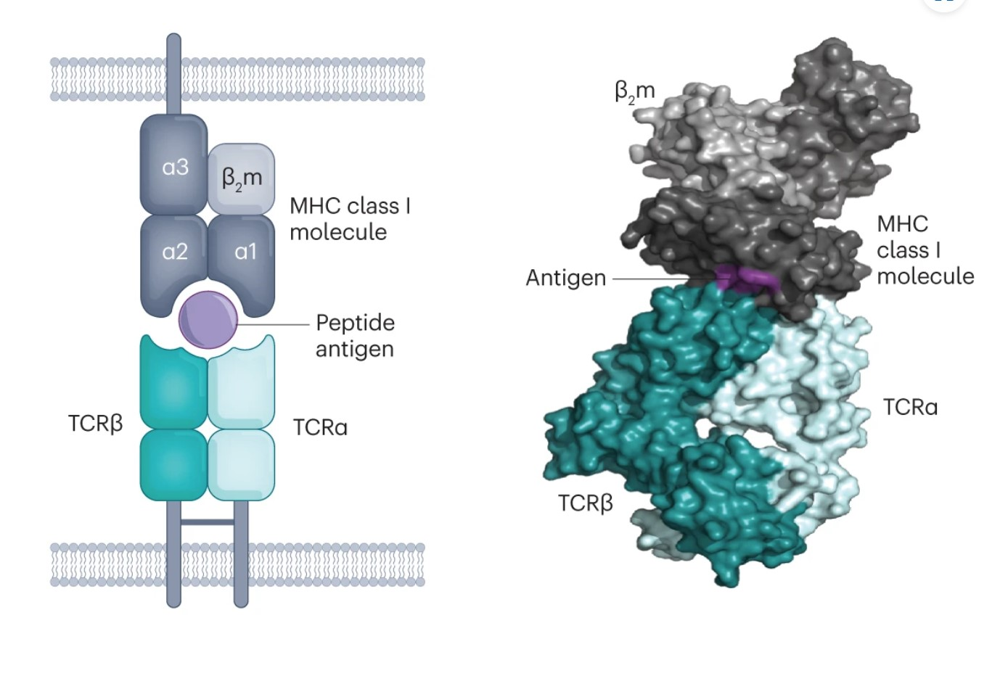

I’m studying the intersection of AI and immunology, two notoriously jargon-heavy fields – but it’s important that scientists share their work with a broader audience. This 3-part series is an experiment: an accessible introduction to AI immunology concepts. This post is part 1 in a series on using AI to predict T cell binding. Here are part 2 and part 3.
T cells are one of the most important cell types of our immune systems, assassinating cells that have been infected by viruses or turned cancerous, and sending commands to other immune cells to organize responses against invaders. T cells can help mobilize against a wide range of threats due to their incredible diversity. They are able to rearrange their genes to recognize billions of different types of infected or rogue cells.
Figuring out how to predict what a T cell will bind to (meaning what cells it can recognize as bad and coordinate attacks against) would be a vital medical breakthrough. Some cancer therapies are based on teaching T cells to better recognize tumor cells. Knowing the answer could help us design new drugs. And not knowing can have disastrous consequences. A therapy was trialed in which patients were injected with T cells that would kill cells displaying a protein that is commonly found in cancer, but is not displayed by healthy cells. Tragically, it turns out that these T cells can also bind to a different and unrelated protein found in heart muscles, and two patients died of cardiac arrest.

In this 3-part series, I will explore efforts to use AI to predict what T cells will bind to, and why it matters.
T cells, our multi-purpose immune heroes
At their best, T cells destroy viral-infected cells and stop cancer before we ever develop symptoms. When things go awry, T cells can accidentally attack our own cells – for instance Type 1 Diabetes occurs when T cells mistakenly destroy insulin-producing cells in the pancreas and psoriasis is caused by T cells attacking the skin (check out this 5 minute video I made for more information about confused T cells). Or “exhausted” T cells can sit idly by as tumors rapidly grow.
T cell receptors (TCRs) are protein complexes on the outside of a T cell. The way a T cell recognizes a problematic cell is by binding to a small piece of protein, called a peptide. T cells can bind only to peptides that are presented to them on fancy platters– err, I mean on special molecules called MHC molecules, found on the outside of cells. The binding of TCR-peptide-MHC is like a secret handshake. The TCR is very specific about which peptides it can bind to. Most combinations will not work.

Since TCRs are made of protein, and they bind to small pieces of protein, it is helpful to consider some related questions about proteins before we tackle TCR binding in more detail.
Proteins: workhorses of the cell
Proteins make life as we know it possible; they are responsible for the hard work that goes on within our cells. Proteins give our cells shape and structure, and help them stay organized. Most biochemical reactions occur thanks to enzymes, which are entirely made of proteins. And hormones are proteins that send messages around the body.
The 3D shape of a protein is crucial to understanding how it functions within the body and what roles it plays. However, the information we often receive about proteins is not 3D. It is a list of letters – a sequence of amino acids, the building blocks of proteins. These lists can twist and fold, creating spirals, sheets, and other interesting sculptures.
For example, insulin is an important protein messenger that lets our cells know when they should absorb more sugar. Insulin consists of this sequence of 110 amino acids (there are 20 distinct amino acids, and each has a letter representing it):
MALWMRLLPLLALLALWGPDPAAAFVNQHLCGSHLVEALYLVCGERGFFYTPKTRREAEDLQVGQVELGGGPGAGSLQPLALEGSLQKRGIVEQCCTSICSLYQLENYCN
However, to really understand insulin, we need to know what it looks like as a 3D molecule. Its shape and structure helps determine which other molecules will interact with it.

The insulin receptor (which is on the surface of cells and can bind to insulin, receiving the message and sending off an internal signal within the cell) is also a protein. It is a sequence of over 1,000 amino acids and has a far more complicated structure.
A new champion: AlphaFold
This question of converting amino acid sequences (on the left) to 3D structures (on the right) has wide-reaching implications within biology and medicine.

In 1994, a competition was established for researchers to go head-to-head in trying to best answer this question. Leading up to the competition, as scientists discovered new protein structures, using laboratory techniques such as X-ray crystallography or NMR spectroscopy, they kept some of the results secret. Later, these structures would be freely shared with other scientists, but for now, they must be held apart for the challenge. The somewhat dry name, Critical Assessment of Structure Prediction (CASP), belies the importance of this task.
In the competition, each team submits their guesses, generated by computer programs they created. The distance between the guesses and the actual structures is measured in Angstroms, with 1 Angstrom being one just ten-billionth of a meter.
CASP did not make international headlines until 2020. This is when an entry, titled AlphaFold smashed all existing records, and all competitors, by a wide margin. AlphaFold was created by DeepMind, an AI company owned by Google.

Challenges with T cell data
At first glance, it may seem like AlphaFold would give us a solution to our T cell problem. After all, T cell receptors are made of proteins, and they bind to other proteins. Aren’t protein structures a solved problem? Not so fast. The T cell receptor problem poses many different and additional challenges.
There are a few factors that make the question of what a T cell will bind to– known as T cell receptor specificity– distinctive and more complicated than the problem AlphaFold solves. First of all, AlphaFold was created to predict protein structures from a single chain of amino acids. However, TCRs have 2 key chains of amino acids: alpha and beta. Both are important. These alpha and beta chains can be mixed and matched willy-nilly.

Another issue is that we have far less data on TCRs than we do on general proteins. The genes that code for the TCR vary greatly across the population. They are some of the most diverse genes in the entire human genome! This means that the (relatively small) dataset we do have is only a fraction of what exists. AlphaFold is based on machine learning, and machine learning models are highly dependent on the quality, quantity, and nature of the data used to train them.
This post is part 1 in a series on using AI to predict T cell binding. Here are part 2 and part 3.
Thank you to Jeremy Howard for feedback on earlier drafts of this post.
You can subscribe to be notified of new blog posts by submitting your email below:
I look forward to reading your responses. Create a free GitHub account to comment below.